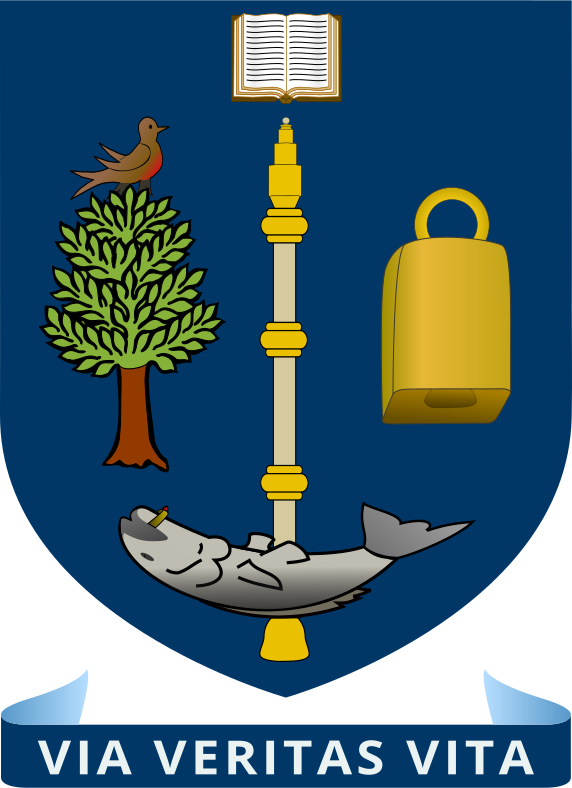

About Me
I’m a computational and molecular biologist driven by one goal: to help make connective tissue wasting, degeneration, and ageing more understandable and, ultimately, more treatable. I’m especially drawn to tendon, muscle, and bone, where disease is often understudied, chronic, heterogeneous, and difficult to measure. These are low-signal systems shaped by dense extracellular matrix, slow remodeling, and subtle shifts in cell state, and I believe computational biology is uniquely powerful for turning that complexity into testable biology.
During my DPhil at the University of Oxford, I studied human tendon development, integrating single-nucleus and spatial transcriptomics with histology to connect molecular programs to tissue architecture across development and the lifespan. That work made me care deeply about the challenges involved in understanding mechanisms driving connective tissue disease.
My path into computational biology started with a strong foundation in coding and statistics during my integrated MSc at the University of Glasgow. I began my DPhil during the COVID lockdowns, and I used that time intentionally to build the skills I wanted to rely on for the rest of my career - learning Python from scratch, developing robust analysis workflows, and pushing beyond “getting it to run” toward understanding the fundamentals. Over time, I moved from learner to teacher, and I’ve taught students the foundations of single-cell RNA-seq analysis in Python through the Oxford Biomedical Data Science Programme. I’m fond of rigorous methods and love to deep dive into first principles - especially QC, benchmarking, and careful interpretation - and I’m excited by the next wave of capabilities for big-data biology.
I now work at an early-stage startup focused on connective tissue diseases, where we pair a robust tissue bank with computational biology to ask hard questions at scale. I lead core analysis and automation for short- and long-read RNA-seq workflows spanning bulk, single-cell, single-nucleus, and spatial modalities—taking projects from raw data to results that are reproducible, interpretable, and ready to use. I also contribute to business development and cross-functional planning, translating technical capabilities into product direction and partnership narratives - because I like science that’s rigorous enough to publish and practical enough to build on.
Tech Stack
A curated selection of tools I use regularly for reproducible omics/ML analysis and pipeline development.
Core Languages
Python
R
Bash/Shell
Compute & Infrastructure
AWS
Nebius
Linux
Kubernetes
Pipelines & Reproducibility
Seqera Platform
Nextflow
CGAT-core
Conda/Mamba
Docker
Data Science & Visualisation
TensorFlow
PyTorch
scikit-learn
pandas
AnnData
NumPy
SciPy
Dask
ggplot2
Matplotlib
Seaborn
Plotly
statsmodels
Single-cell & Multi-modal Omics
Scanpy
Seurat
Bioconductor
scvi-tools
Palantir
cell2location
CellPhoneDB
CellChat
SCENIC
scGPT
GeneFormer
CZI Census
Other Tools
Git
GitHub
Jupyter
RStudio
Notion
LLM-assisted dev (ChatGPT, Claude Code, Windsurf)
Education
DPhil in Molecular and Cellular Medicine
 University of Oxford, Balliol College
University of Oxford, Balliol College
Oct 2020 - Oct 2024
Investigated the cellular and extracellular matrix biology defining human embryonic, foetal and adult aged tendons using single-nucleus and spatial RNA-sequencing techniques, imaging, and computational biology.
Uncovered cell types and pathways relevant for the design of biomaterials capable of guiding diseased/aged tendon tissue repair towards a self-regenerative phenotype.
Funded by MRC-DPT and Balliol College Snell Scholarship.
MSc in Molecular Biology, 1st
 University of Glasgow
2015 - 2020
Made it into the College of MVLS Dean's List every year. Competed for and got accepted into a fully funded integrated BSc-MSc degree programme that allowed me to spend my 4th year of studies working as a placement student at AstraZeneca (CRUK CI, Cambridge, UK).
Work Experience
Senior Computational Scientist
Nov 2024 - PresentEntelo Bio
- Develop and maintain reproducible, end-to-end analysis pipelines for short- and long-read RNA-seq across bulk, single-cell, single-nucleus, and spatial modalities.
- Lead the evaluation and integration of machine learning and foundation model approaches within single-cell workflows, with a focus on QC, robust annotation, and biologically grounded interpretation.
- Partner with cross-functional teams to translate biological questions into computational strategy, delivering analyses that inform experimental design, prioritisation, and decision-making.
- Contribute beyond analysis through business development, operational planning, and scientific storytelling, connecting platform capability to product direction and partnership narratives.
Postdoctoral Research Associate (Single-cell Analysis)
Oct 2024 - Present (Part-time)The Botnar Institute, NDORMS, University of Oxford (Prof Sarah Snelling)
- Lead and support analysis of human tendon single-nucleus RNA-seq as part of the Tendon Seed Network initiative, delivering reproducible results and clear biological interpretation.
- Mentor junior researchers and trainees in computational best practices, including single-cell QC, integration, differential expression, and reproducible analysis in Python and R.
Creator & Trainer — “Python for Single-cell Analysis”
Dec 2023 - Feb 2025Oxford Biomedical Data Science (OBDS) Training Programme, MRC WIMM Centre for Computational Biology, University of Oxford
- Designed and delivered a 5-day in-person module on Python for single-cell analysis, combining lectures on core theory with advanced hands-on tutorials for end-to-end, multi-sample workflows.
- Taught key concepts and best practices including alignment, QC, batch correction and integration, normalisation, feature selection, dimensionality reduction, and cell type annotation.
- Consistently received strong feedback for the thoroughness of the material and an accessible, supportive teaching style.
DPhil Research Scientist
Oct 2020 - Oct 2024The Botnar Institute, NDORMS, University of Oxford (Prof Sarah Snelling, Dr Mathew Baldwin, AsProf Adam Cribbs, Prof Christopher Buckley)
- Led end-to-end multi-modal research in human connective tissue biology, including foetal and adult tissue dissection, tissue processing, and bulk, single-nucleus, and spatial RNA-seq.
- Performed integrated histology and imaging workflows, including sectioning, staining, multiplex immunofluorescence, and immunohistochemistry, to connect molecular programs to tissue structure.
- Analysed a large multi-year dataset (>200,000 cells/nuclei) from raw BCL/FASTQ through downstream single-cell analytics, including QC, batch integration, trajectory inference, RNA velocity, pseudobulk differential expression, and gene regulatory network analysis.
- Built and maintained reproducible analysis workflows in Python, R, and Bash, using HPC, Git/GitHub, Conda environments, and Jupyter/RStudio/VS Code.
- Authored multi-language pipelines for bulk and snRNA-seq analysis adopted within and beyond the lab (cribbslab package).
- Mentored junior researchers in computational methods
MSci Honours Project Student
Sept 2019 - Dec 2019University of Glasgow (Prof Matthew Dalby, Dr Hannah Donnelly)
- Investigated a plasma polymerised PEA–FN–TGF-β scaffold platform to drive chondrogenic differentiation of human pericytes isolated from microtia patient ear biopsies, contributing to the Donnelly et al. publication.
- Performed primary cell culture and molecular assays including RT-qPCR, Western blot, and in-cell Western, alongside flow cytometry and immunostaining.
- Conducted fluorescence microscopy and atomic force microscopy; accelerated image quantification by writing ImageJ/FIJI macros to streamline high-throughput analysis.
- Analysed and presented experimental results using FIJI and GraphPad Prism.
Industrial Placement Student (Immuno-Oncology)
Sept 2018 - Aug 2019AstraZeneca, Cambridge (Dr Larissa Carnevalli, Dr Jon Travers, Dr Anisha Solanki)
- Developed and optimised ex vivo assays to characterise drug effects on tumour antigen–specific T cells across three syngeneic mouse models (CT26, 4T1, MC38).
- Established robust workflows for immune cell isolation from spleens and tumours, including MDSC and T cell enrichment using FACS, magnetic bead selection, and Percoll gradients.
- Executed tissue processing, cell culture, and multi-parameter immunostaining with multicolour flow cytometry; analysed datasets in FlowJo, BD FACSDiva, and GraphPad Prism.
Summer Research Intern (Cancer Cachexia)
May 2018 - Aug 2018Wolfson Wohl Cancer Research Centre, University of Glasgow (Prof Julia Cordero, Dr Philippe Parvy)
- Built a Drosophila cancer cachexia model by generating tumour-bearing larvae with sustained Ras oncogene overexpression.
- Quantified the impact of JAK/STAT pathway perturbations (Stat and/or Domeless knockdown) on tumour burden, tumour cell death, and muscle wasting.
- Performed larval synchronisation and dissection, immunostaining, and RT-qPCR; acquired images with confocal microscopy and analysed/quantified results using Fiji, Volocity, and GraphPad Prism.
Summer Research Intern (Drosophila Immunity & Cancer)
July 2017 - Sept 2017Cancer Research UK Beatson Institute, Glasgow (Prof Julia Cordero, Dr Philippe Parvy)
- Investigated anti-tumour properties of defensin peptides by engineering Drosophila genetic crosses targeting Toll and Imd signalling in tumour backgrounds; work contributed to Parvy et al. (2019).
- Quantified defensin gene expression, tumour volume, and cell death using confocal microscopy and image-based analysis pipelines (ZEN, Fiji, Volocity).
- Developed constructs to visualise microvesicle-mediated exchange between immune cells and tumours, supporting mechanistic studies of tumour–immune interactions.
Publications
Cellular and molecular landscapes of human tendons across the lifespan revealed by spatial and single-cell transcriptomics
Exploring cellular changes in ruptured human quadriceps tendons at single-cell resolution
Single nucleus and spatial transcriptomic profiling of healthy human hamstring tendon
Fibronectin Matrix Assembly and TGFβ1 Presentation for Chondrogenesis of Patient Derived Pericytes for Microtia Repair
The prognostic utility of pre-treatment neutrophil-to-lymphocyte-ratio (NLR) in colorectal cancer: A systematic review and meta-analysis
The antimicrobial peptide Defensin cooperates with Tumour Necrosis Factor to drive tumour cell death in Drosophila
Projects & Conferences
Poster — BSMB Matrix in Development (Liverpool, UK)
Presented “Defining the Structural and Transcriptional Landscapes of Developing Human Tendons” (12–14 Sept 2022), highlighting how tissue architecture and emerging cell states can be resolved through combined histology and transcriptomics.
Poster — HCA Developmental & Pediatric Cell Atlas Meeting (Paris, France)
Presented “Defining the Structural and Transcriptional Landscapes of Developing Human Tendons” (20–22 Nov 2022), focusing on developmental cell-state transitions and the value of integrating spatial context for interpretation.
Oral — TERMIS EU 2025 (Freiburg, Germany)
Delivered an oral talk in the session “Advances in Tendon and Ligament Regeneration” (20–23 May 2025): “Cellular and molecular landscapes of human tendon development and ageing through comparative histology and single-cell transcriptomics.”
Invited Speaker — Single-Cell & Spatial Symposium (Norwich, UK)
Invited speaker (08–09 July 2026). Talk title: TBC.
Contact
Interested in collaboration or want to discuss computational biology, bioinformatics, or machine learning? Feel free to reach out through any of the following channels: